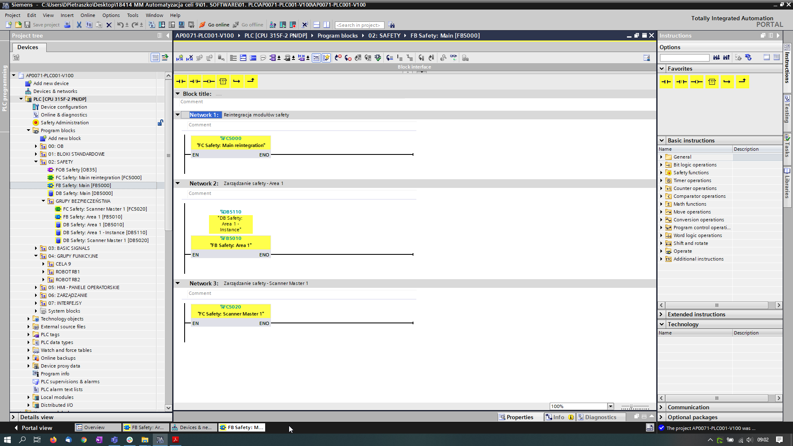

Konfiguracja stacji ET 200SP dla PROFINET
1. W projekcie kliknij na zakładkę „Network view”.
2. W katalogu urządzeń wpisz w pole wyszukiwarki „IM155-6 PN” i rozpocznij szukanie [Enter].
3. 3W wynikach wyszukiwania kliknij na moduł interfejsu o numerze 6ES7155-6AU00-0BN0.
4. W części informacyjnej modułu (Information) kliknij na kontrolkę wyboru i wskaż właściwą wersję firmware twojego interfejsu.
5. Przeciągnij moduł o numerze 6ES7155-6AU00-0BN0 z katalogu (Catalog) do przestrzeni graficznej konfiguracji sieci urządzeń (Network view).
6. Kliknij na interfejsie PROFINET modułu IM155-6 PN ST i przeciągnij go do interfejsu F-CPU - powstanie linia symbolizująca połączenie PROFINET.
Wynik: Pomiędzy F-CPU a „IM155-6 PN ST” zostało utworzone połączenie PROFINET z automatycznym przypisaniem zależności, nazw oraz adresów IP. Następne moduły „IM155-6 PN-HF” w celu zrealizowania bezpieczeństwa celi, zostały dodane do projektu analogicznie.
Wyszukiwanie ET 200SP w sieci PROFINET

Urządzenia ET 200SP oraz inne urząrzenia w sieci PROFINET należy wyszkać i je zidentyfikować w celu poprawnego działania systemu. Należy nadać urządzeniom odpowiednie nazwy i adresy IP takie jak zostały podane w schemacie elektrycznym do projektu.
Identyfikacja modułów ET 200SP i nadanie adresów PROFIsafe - Opis
Komunikacja PROFIsafe bazuje na dwóch typach adresów: adresy źródłowe (F-source address) nadawane masterom komunikacji (F-Host) oraz adresach urządzeń (F-destination address) nadawanym wszystkim podrzędnym urządzeniom bezpieczeństwa znajdującym się w podsieci PN (lub DP). Każdy moduł F-I/O musi posiadać unikalny adres PROFIsafe. Adresy PROFIsafe F-CPU muszą być unikalne w globalnej sieci systemu, adresy modułów F muszą być unikalne w obrębie podsieci F-CPU. Warunek ten jest spełniony gdy:
● Adres źródłowy (parametr „Basis for PROFIsafe addresses”) F-CPU jest unikalny w globalnej sieci systemowej (np. zakładu).
● Adres urządzenia (F-destination address) modułu/urządzenia F jest unikalny w obrębie podsieci F-CPU.

W przykładzie pozostaw adresy PROFIsafe przypisane automatycznie przez F-system. Moduł jest gotowy do nadania adresu (F-destination), kiedy jego wszystkie diody świecą w kolorze czerwonym. Przypisz adres wykonując czynności jak niżej:
1. Otwórz widok stacji ET 200SP w „Network view”. Kliknij na stację.
2. W skróconym menu (klik prawy przycisk myszki) wybierz komendę „Assign F-destination address”.
3. Wybierz metodę którą użyjesz do identyfikacji modułu F (Identyfication):
–– przez mrugający LED (by LED flashing). Jest to nastawa domyślna. Podczas identyfikacji dioda STATUS na module F mruga.
–– przez numer seryjny „by serial number”. Jeśli nie możesz widzieć moduł F, możesz zidentyfikować go przez numer seryjny interfejsu.
4. W kolumnie „Assign” wybierz moduł F, któremu chcesz nadać F-destination adres. Jeśli wybierzesz moduł interfejsu w kolumnie „Assign” zostaną wybrane wszystkie moduły F znajdujące się w stacji.
5. Kliknij na przycisk identyfikacji (Identification). Sprawdź czy mrugają kolorem zielonym diody statusu właściwego modułu tj. któremu chcesz przypisać adres. Jeśli identyfikujesz używając numer seryjny, porównaj wyświetlony numer seryjny z numerem seryjnym modułu interfejsu.
6. Potwierdź prawidłową identyfikację modułu F w kolumnie „Confirm” tabeli.
7. Użyj przycisk przypisania adresu (Assign F-destination) aby przypisać modułowi F adres. W ciągu 60 sekund musisz potwierdzić poprawność akcji przyciskiem „Confirm Assignment”.
8. Zamknij okno dialogowe. Patrz poniżej.


Poniżej została przedstawiona cała identyfikacja modułu safety dla ET 200SP
Identyfikacja modułów safety ET 200SP. Prawy przycisk myszy i zakładka „Assign PROFIsafe address”.

Identyfikacja modułów safety ET 200SP za pomocą przycisku „Identyfication”.

Identyfikacja modułu odbywa się za pomocą migających diód na module. Moża określić który moduł jest zidentyfikowany.

Potwierdzenie zidentyfikowanego modułu safety odbywa się za pomocą przycisku „Assign PROFIsafe address”.

Poniżej przedstawiono dobrze zidentyfikowany i potwierdzony moduł safety.

Poniżej przedstawiono dobrze zidentyfikowane i potwierdzone moduł safety urządzenia ET 200SP.

Program safety główny - Main
Poniżej został przedstawiony program główny safety PLC gdzie są wywoływane bloki funkcji oraz przedstawiono reintegracje modułów po wystąpieniu zdarzenia niebezpicznego, czyli potwierdzenie modułu po wystąpieniu niebezpieczeństwa.



Program safty PLC w całości można zobaczyć w projekcie "AP0071-PLC001-V100" od Celi nr 9 w TIA Portal.